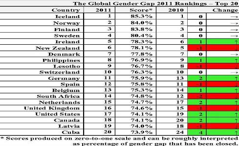

|
|

گزارش فورم جهانی اقتصاد از شکاف جنسیتی در سال ۲۰۱۱
برگردان: حمید حمیدی
چهار شنبه25 آبان 1390
گزارش شکاف جنسیتی در سال ۲۰۱۱که مجمع جهانی اقتصاد آن را بر اساس اطلاعات دریافتی و بررسیهای کارشناسانه تهیه و تدوین کرده، یکی از مهمترین و کاربردیترین گزارشها در سطح جهانی است که با بررسی وضعیت ۱۳۵کشور جهاندر طی سال جاری، میزان نابرابری بین زنان و مردان را مشخص ساخته و راهحلهای مناسبی برای کم کردن شکاف جنسیتی بین زنان و مردان ارائه داده است.
در این گزارش،ایران در رتبه ۱۲۵از ۱۳۵کشور مورد بررسی قرار گرفته است. این کشوردرسال ۲۰۱۰در بین ۱۳۴کشور رتبه ۱۲۳، سال۲۰۰۹در بین ۱۳۲کشور رتبه ۱۲۸، در سال ۲۰۰۸ در بین ۱۳۰کشور رتبه ۱۱۶، در سال ۲۰۰۷در بین ۱۲۸کشور مورد بررسی در رتبه ۱۱۸و در سال ۲۰۰۶در بین ۱۱۵کشور در رتبه ۱۰۸قرار داشت.
یافتههای گزارش اخیر نشان میدهد که هیچ کشوری در دنیا وجود ندارد که شکاف جنسیتی در آن بهطور کامل از بین رفته باشد و فقط کشورهای اروپای شمالی به موفقیتهایی در به حداقلرسانیدن شکافهای جنسیتی دست یافتهاند.
در گزارش سال ۲۰۱۱،ایسلند توانست همچون سال ۲۰۱۰، با تحقق شاخصهای مورد نظر، در رتبه اول قرار گیرد. نروژ که در سال ۲۰۱۰رتبه دوم را در اختیار گرفته بود با حفظ شاخصها در رتبه دوم قرار گرفت و فنلاند توانست رتبه سوم را از آن خود کند.سوئد نیز در رتبه چهارم قرار گرفت. در این گزارش همچون سال گذشته، چهار کشور اسکاندیناوی در چهار رتبه اول تا چهارم قرار دارند.
بر اساس آمار منتشر شده، ایسلند توانسته بیش از۸۵درصد (در سال ۲۰۱۰بیش از ۸۴درصد ودر سال ۲۰۰۹، ۸۲درصد) از عوامل ایجاد شکاف جنسیتی، در داخل کشور خود را از بین ببرد. کشورهای نروژ، فنلاند، سوئد، ایرلند، نیوزیلند، دانمارک، فیلیپین، لستو، سوئیس، ۹کشوری هستند که به ترتیب بعد از ایسلند قرار دارند و توانستهاند جایگاههای دوم تا دهم این رتبهبندی را به خود اختصاص دهند. ۱۰رتبه آخر جدول نیز متعلق به کشورهای نپال، عمان، بنین، مراکش، کوته دلووریو، عربستان سعودی، مالی، پاکستان، چاد و یمن است.

فیلیپین تنها کشور آسیایی است که در ردیف ۱۰ کشور اول جهان و در رتبه هشتم قرار دارد. آفریقای جنوبی که در سال ۲۰۰۸در رتبه ۲۲قرار داشت، در سال ۲۰۰۹به رتبه ششم ارتقا یافت.در سال ۲۰۰۹ نیز نخستین کشور آفریقایی پیشرو در زمینه از بین بردن شکاف جنسیتی لقب گرفته بود. آفریقای جنوبی با شش رتبه تنزل به رتبه ۱۲در سال ۲۰۱۰و با دو رتبه تنزل در سال ۲۰۱۱در رده ۱۴قرار گرفت. ایران در میان ۱۳۵کشور مورد بررسی در رده ۱۲۵جای گرفته وبا یک رتبه ارتقاء، بالاتر از آخرین ۱۰کشور جهان است. در سال ۲۰۰۸، ایران با کسب رتبه ۱۱۶در میان ۱۳۰کشور، تنها چهاررتبه با آخرین ۱۰کشور جهان فاصله داشت.
مجمع جهانی اقتصاد،هدف از مقایسه میزان برابری زنان و مردان در این ۱۳۵کشور را روشن کردن نقاط قوت و ضعف آنهابرای آگاهی دولتهایشان و نیز ایجاد امکان سیاستگذاری و برنامهریزی براساس تجربیات کشورهای موفق در پیوند با شکاف جنسیتیاعلام کرده است. این گزارش تلاش دارد با ارائه آمار و اطلاعات مقایسهای بین دو جنس در محورهای اقتصادی، آموزشی، بهداشتی و سیاسی، در نهایت جهان را به شرایط برابری جنسیتی بین زنان و مردان رهنمون سازد و از این راه به شکاف و تبعیضی که بر کیفیت زندگی نیمی از جمعیت جهان اثر گذاشته خاتمه دهد.
در گزارش سال ۲۰۱۱ با اشاره به توانمندی بالقوه و نقش کلیدی زنان در خروج جهان از بحران اقتصادی آمده است کشورهای ایسلند، نروژ و فنلاند همچنان در صدر جدول شاخص مبارزه با تبعیض جنسیتی در جهان قرار دارند و نام کشورهای پاکستان، چاد و یمن در قعر این جدول به چشم میخورد.
در این گزارش وضعیت یکصد و سی وپنج کشور جهان از لحاظ تقسیم عادلانه و برابر درآمدها، منابع و فرصتها میان زن و مرد مورد بررسی قرار گرفته است.
در تحولی چشمگیر نام کشورهای فیلیپین در آسیا و لسوتو در آفریقا، درمیان۱۰کشور نخست این جدول قرار گرفته است.
آمریکا نیز از رده نوزدهم در جدول سال گذشته، امسال به رده هفدهم رسیده است؛در حالیکه نام فرانسه، به ویژه به علت عملکرد ضعیف در واگذاری قدرت سیاسی به زنان با دو رتبه تنزل، در رده چهل وهشتم جدول امسال قرار گرفته است.فرانسه سال گذشته نیزبیش از بیست و پنج پله سقوط کرده بود.
نام بسیاری از کشورهای بزرگ و پیشرفته اقتصادی جهان نیز در قعر این جدول به چشم میخورد. ژاپن در رده نود و هشتم و چین در رده شصت و یکم جدول شاخص مبارزه با تبعیض میان زن و مرد قرار دارد.
جایگاه انگلیس در جدول امسال تغییرکرد و با دو رتبه تنزل به جایگاه هفدهم رفت، ولی نام آلمان با دو رتبه صعود در رده یازدهم جدول قرار گرفته است.
به موجب این گزارش کشورهای اسکاندیناوی از لحاظ شکاف سطح حقوق و دستمزد میان زن و مرد، در پایینترین سطح قرار دارند و برای زنان فرصتهای فراوانی در جهت دردست گرفتن سمتهای ریاستی فراهم آمده است. مجمع جهانی اقتصاد اعلام کرده که کاهش تبعیض میان زن و مرد در عرصه اشتغال، نیرو محرکه اصلی رشد اقتصاد اروپا در یک دهه گذشته بوده است.
منبع:سایت فروم جهانی اقتصاد